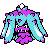
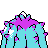

#472
Mareanie
Updated typingPoisonWater
MercilessAlways crits poisoned foes.
LimberProtects from paralysis.
RegeneratorHidden abilityRestores HP when withdrawn.
Original vs Updated
Original uses modern main-game values. Updated uses Crimson Crystal’s changes. Choose typings and base stats separately when starting a new game. Abilities, moves and evolution changes apply to both choices.
Original
PoisonWater
Updated
PoisonWater
Base stats
| Stat | Original | Updated | Change |
|---|---|---|---|
| HP | 50 | 50 | — |
| Attack | 53 | 53 | — |
| Defense | 62 | 62 | — |
| Sp. Atk | 43 | 43 | — |
| Sp. Def | 52 | 52 | — |
| Speed | 45 | 45 | — |
| Total | 305 | 305 | — |
Evolution
Training & breeding
- Catch rate
- 190 / 255
- Base experience
- 61
- Wild held items
- Poison Barb (rare)
- Gender ratio
- 50% male, 50% female
- Egg groups
- Water 1
- Hatch time
- 20 egg cycles (~5,120 steps)
- Growth rate
- Medium Fast
Level-up moves
LevelMoveTypeCat.PowerAcc.
TM / HM moves 16
TM / HMMoveTypeCat.PowerAcc.
Egg moves 4
LearnedMoveTypeCat.PowerAcc.